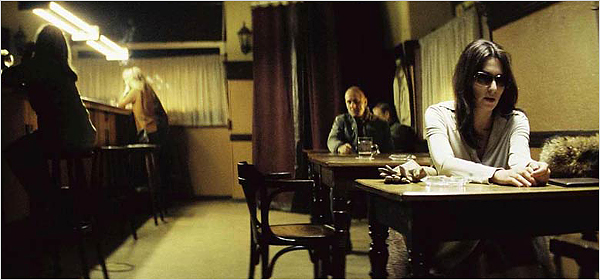

-
The Ninotchka Effect
by Greg Afinogenov October 29, 2009
Why was Florian Henckel von Donnersmarck’s 2006 film The Lives of Others so popular in America? After all, the Cold War has been over for decades, and even the vague set of images that constitutes most Americans’ only source of knowledge about East Germany—the plastic Trabant, the Stasi, the tunnel-digging refugees—is quickly passing into cultural oblivion. The acting and cinematography, of course, are superb, but that is hardly enough nowadays. It must, clearly, be something about the plot.
There are really two stories in The Lives of Others. One is about the heroic playwright who keeps up an ideologically-correct façade while secretly sympathizing with dissidents and writing subversive literature for the West—and who not only gets away with it but even outlives the regime. The other is about the severe secret-police agent, devoid of humor or pity, whose loveless existence is suddenly transformed by the power of human sympathy, leading him to actively help the people he had once tried to destroy. Both stories are especially appealing to the Western viewer; they allow him, at a comfortable chronological distance, to luxuriate in the pleasant feeling of having been right all along. But they do not have equal power. The dissident is no longer the culture-hero he once was. Too many real-life dissidents, once the iron veil was lifted, turned out to be hypocritical, nationalistic, or otherwise unpalatable to the West (as we saw with the awkward postmortem tributes to Solzhenitsyn last year). Only Sebastian Koch’s charm and good looks could redeem an otherwise irrelevant character.
It is the other story that really pulls the heartstrings. Of course, the redemption of the straight-laced by-the-book type is an old staple of literature as well as film. The character of the Stasi officer Wiesler as he is portrayed here, though, has a decidedly ideological tint: he’s not a priggish Baptist or a prudish schoolgirl but an authoritarian communist. What’s more, he seems to be the only person in the film for whom ideology has any meaning at all. We see corrupt communists, boot-licking communists, cynical communists, but no truly fervent communists; even the dissidents’ political views remain oddly inarticulate, though perhaps this was a deliberate attempt to avoid ruffling too many contemporary feathers. The implication here is that a fundamental commitment to communism entails the surrender of a large part of one’s humanity.
This idea has an old heritage. Nineteenth-century Russian literature positively bristles with ascetic, unfeeling revolutionaries (like Turgenev’s Bazarov or Chernyshevsky’s Rakhmetov). Marxist regimes were famous for encouraging children to denounce their parents as subversives. Of course, rarely did they draw the conclusion that communism had an inherent affective deficit: more often than not, the revolutionary’s selfless dedication to the collective was juxtaposed with the capitalist’s callow and unsympathetic exploitation of the workers. What marks a true communist, in the sympathetic view, is equally the ability to put the collective above his own feelings and the spirited, passionate interaction with other human beings within the struggle.In fact, the line of filiation for The Lives of Others leads directly back to another, classic film. Ernst Lubitsch’s 1939 comedy Ninotchka. Ninotchka, set mostly in idyllic prewar Paris, is far from the life-or-death drama of Henckel’s Berlin. Here, the threat of being sent to Siberia is repeatedly played for laughs, and the only direct suggestion of the Great Terror is the titular character’s casual remark that it will lead to “fewer, but better, Russians.” In Ninotchka, however, we find the same ideological coordinates that would later be used to such great effect in The Lives of Others.
The film begins with the arrival of three Soviet envoys—made to look like degenerate versions of Lenin, Stalin, and Trotsky—at a ritzy Parisian hotel, with a suitcase full of confiscated Tsarist jewels. Their goal is to sell the jewels on behalf of the Soviet state, but the deal goes sour and they are more interested in drinking and carousing than ideological purity. Then Ninotchka, played by a stern Greta Garbo, is sent to fix things. She does not laugh or smile, talks in clipped tones, quotes Marxist slogans, and cares for nothing in Paris except its infrastructure. Soon, however, she meets a local lothario who falls in love with her and gradually undermines her asceticism. By the middle of the film, all of Ninotchka’s self-assured competence is gone; she becomes a swooning airhead who wears poofy gowns and gets drunk on three glasses of champagne. When she is forced to come back to Moscow, where poverty and paranoia reign, her lover attempts to get a visa to join her, but is unable to. In the end, he entices her by a ruse to Constantinople, where she—along with the three Soviet envoys—remains for good, fulfilling her symbolic debt to her motherland by opening a Russian restaurant. The proletariat receives nary a mention.
All kinds of ideological currents run through the film. One is that of gender: from a humorless bra-burning feminist stereotype avant la lettre Ninotchka becomes a conventional and dependent woman. (Ironically, even if the film’s overall message would have horrified them, Stalinist ideologues would not have objected to this: the sexual freedom that briefly flourished in Russia around the Revolution was quickly being replaced by a traditional ideology of female domesticity.) The primary message, though, is the quasi-political opposition between love and (communist) ideology. In one scene, while attempting to get a visa, Ninotchka’s lover announces that his strictly personal visit “has nothing to do with social philosophies or politics.” In another, the pair, drunk in Ninotchka’s hotel room, proclaims a “Republic of Lovers”: “Lovers of all countries unite.” How can we untangle this series of ideas? Does love have something to do with politics or not? The Ninotchka at the beginning of the film certainly thinks so: love is a mystification created around a “biological impulse common to all.” As she sheds her revolutionary identity, however, she is able more and more to compartmentalize her mind, separating the personal from the political. The Russian restaurant at the end of the film thus represents the sole, rudimentary remnant of the latter.
This compartmentalization is what makes the movie, and what we might call the “Ninotchka Effect” in general, a classic liberal-democratic fantasy. Since contemporary liberal democracy had its origins (as many claim, at any rate) in a differentiation of the private sphere from the state, it is hardly surprising that it would attempt to reenact this differentiation in its fantasy world. The communist cannot have human feelings because, within this world, human feelings can exist only within an arbitrarily delimited private space. An eminently political gesture—the demarcation of the line between the personal and the political—is thus rendered unquestionable and apolitical. Ninotchka is no longer an ideological enemy but merely a flawed (if fixable) human being.
In The Lives of Others, the process of compartmentalization is even more extreme. Wiesler’s political beliefs are not simply reduced to a symbol—they disappear entirely. We never see what he thinks of the new Germany, whether he (or, indeed, Georg Dreyman, our playwright hero) votes Green or Christian Socialist; the sacrifice he has made on behalf of the personal annihilates him as a political being. It is, naturally, clear why this must happen: the time for accommodation, for granting even a symbolic space for ideology, has ended with the fall of the Wall. Henceforth even the political is personal.
The Lives of Others is not popular in America just because it is a good movie or a triumphalist orgy of capitalist self-congratulation (depending on one’s politics). It is also popular because it depicts in a coherent and satisfying way what was once called the end of history. The very inhumanity of the East German state, metonymized in this small, quotidian drama, ceases to be a problem of politics and becomes a problem of human relationships. We must, of course, be on our guard about the ideological fictions that underlie this and almost any other such satisfying resolution. In particular, we must remember that the gesture of eliminating politics continues to be a political one—and by defining the rules of the debate as it does, it destroys the possibility of a dialogue around systemic questions. But in 2009, it is hard not to sympathize with Ninotchka or cheer the Stasi’s demise, no matter how aware we are of the insidious ideological implications. The personal, for better or worse, has absorbed the political.

{kind=link}
{kind=link}
{kind=link}
{kind=link}
{kind=link}